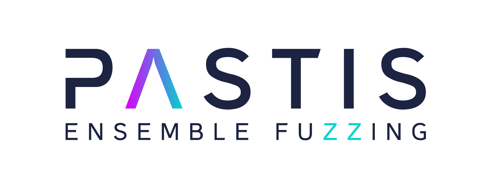
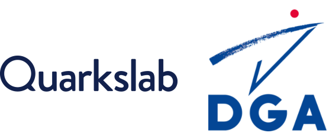

{kind=link}

Project Overview
The PASTIS project is a fuzzing framework aiming at combining various software testing techniques within the same workflow to perform collaborative fuzzing also called ensemble fuzzing.
Note
The video highlight the use-case driven by SAST alerts. However, the main use-case the standard fuzzing for coverage or bug research.
Code Components
The codebase is articulated around 3 main components, which, combined together forms the whole PASTIS infrastructure.
libpastis: Pure python library designed perform all network communications
in the context of PASTIS. Its API mostly expose two classes ClientAgent
and BrokerAgent that enable acting as a client or a broker respectively.
It also exposes common types between components.
broker: head of the infrastructure, acting as an intermediate between each engines connected. It is in charge of ensuring a maximal sharing of seeds between clients. Ensuring this sharing enable theoretically to have the same coverage for all clients. That project is the main interface with the analyst as all configuration options of a campain are set in pastis-broker and propagated to all clients automatically.
engines: They are fuzzing agents, testing the target. They connect to the broker to receive the fuzzing configuration and initial corpus. Then, these agents send back to the broker the test-cases produced and absorb new ones received from the broker.
PASTIS in action
Credits
Sponsors and supporters of the project.
{kind=link}
